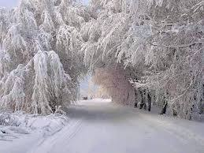

лютий
лютий у фотаграфіях

лютий у фотаграфіях

другий місяць зветься лютий
Другий місяць зветься Лютий,
а лютує він тому,
що на світі довго бути
не доводиться йому.
Хоче Лютий, щоб на світі
панувала вік зима.
Та поволі сонце гріти
починає крадькома.
Довші дні, коротші ночі,
гульк – уже й струмок тече!
Лютий враз як зарегоче,
знов морозом припече,
та як здійме враз хуртечу
як засипле снігом дах!
Люди добре топлять печі,
щоб не змерзнути в хатах.
Та здаля вже крок по кроку
йде весна, веселий час.
І, розгніваний, до строку
Лютий геть тіка від нас.
Що ж, ми тільки добрим словом
провести його змогли!
В цьому місяці зимовім
непогано ми жили